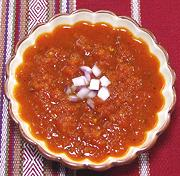

|
Yucatecan Tomato SauceMexico - Yucatán - Salsa de Jitomate Yucateca | ||||
| Makes: Effort: Sched: DoAhead: |
2 cups ** 3 hrs Yes |
A very simple tomato sauce used as an ingredient in many recipes from the Yucatán region. The main difference from other simple tomato sauces is the traditional roasting of the vegetables, and that presents problems (see Note-4). | |||
|
2 5 1 1/4 2/3 2 ----- |
# oz t t T --- |
Tomatoes, ripe Onion Chili Habanero (1) Oregano dry (2) Salt Oil -- Option Chili Chipotle (3) |
Make - (1 hr)
|